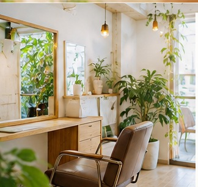

A hairstyle starts with a conversation.
FROM CUSTOMER VOICES
「こんな風にしたい」を、
伝える時間から。
口コミに見つかったのは、仕上がりの話だけではありません。スタイルの相談や、家でのセットの方法まで。髪を整える時間に寄せられた、さまざまな声をご紹介します。
01 / CONSULTATION
今の希望も、
これからの髪型も。
スタイルチェンジの相談で「説明が分かりやすかった」という声や、今後したい髪型へのアドバイスを評価する声が寄せられています。
口コミに基づく紹介：review 274, 276, 286
01 talk & decide
02 / COLOR & SHAPE
色も、シルエットも。
自分らしい選択を。
カラーの色味や顔周りのシルエットに満足した口コミがあります。一方で、カットの仕上がりについて改善を求める声もあり、すべての方の結果を保証するものではありません。
口コミに基づく紹介：review 273, 278, 287, 272, 281
02 your color & shape
03 / SALON TIME
シャンプーの時間も、
楽しみに。
シャンプーやマッサージの心地よさ、丁寧な対応についての感想が見られます。施術中の時間も、サロン選びの理由のひとつに。
口コミに基づく紹介：review 273, 283, 295, 300

03 time to unwindREAL VOICES / SELECTED REVIEWS
お客様の声から。
“カウンセリングをしっかりしていただき、スタイルの方向性が明確になりました。
2026年10月8日の口コミより
“顔周りを作っていただき、理想のシルエットになりました。
2026年9月28日の口コミより
“ヘアアイロンのあて方や温度まで教えてくださって、とても参考になりました。
2026年10月3日の口コミより
※口コミは投稿者個人の感想を一部抜粋したものです。すべての方に同じ結果を保証するものではありません。参照：Hot Pepper Beauty掲載口コミ（2026年10月12日取得）。
掲載口コミを確認する ↗INFORMATION
川崎東口で、お待ちしています。
TAKE YOUR TIME, FIND YOUR STYLE.
次のスタイルを、
ここから。